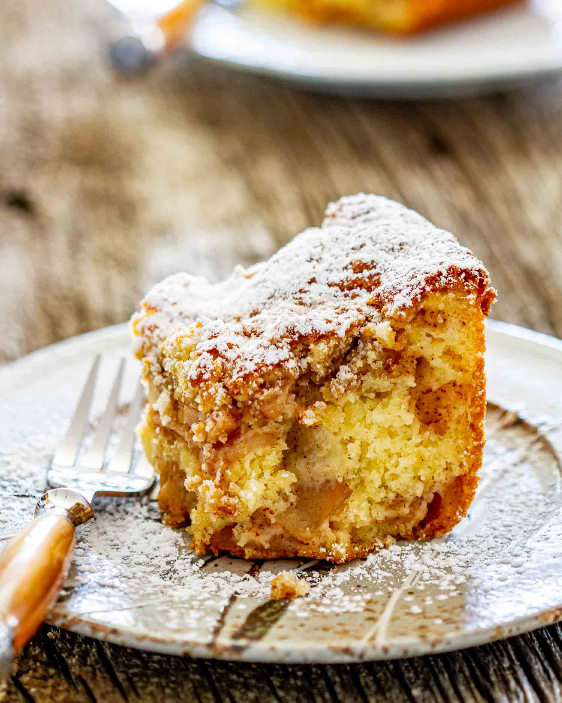
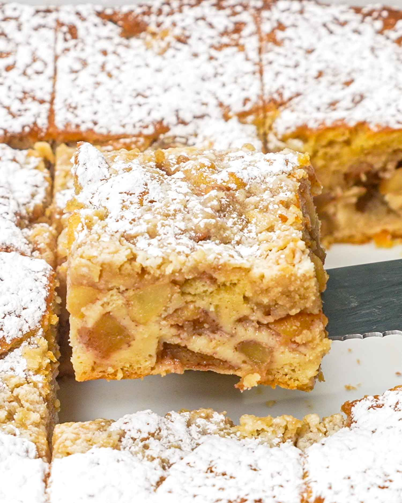
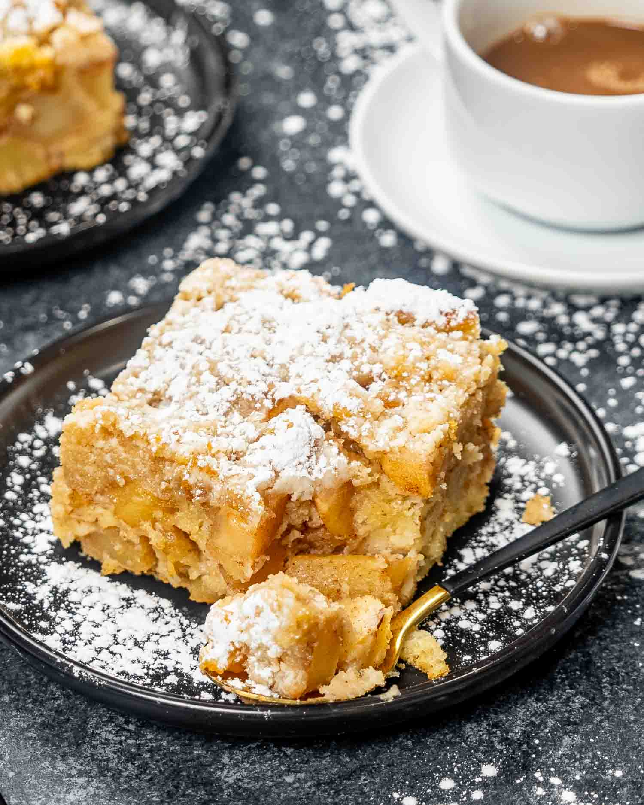
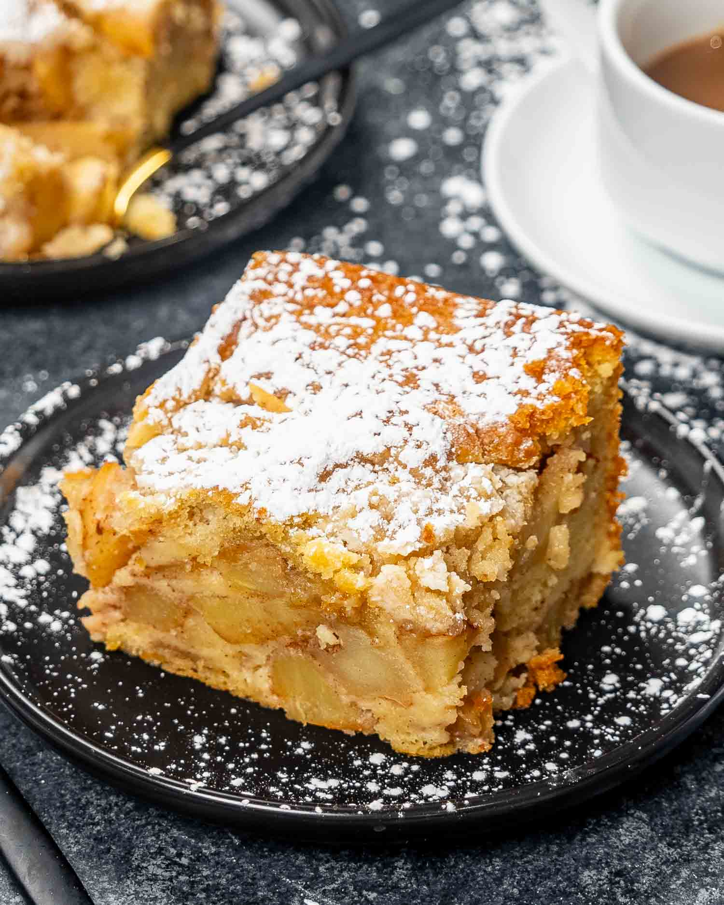
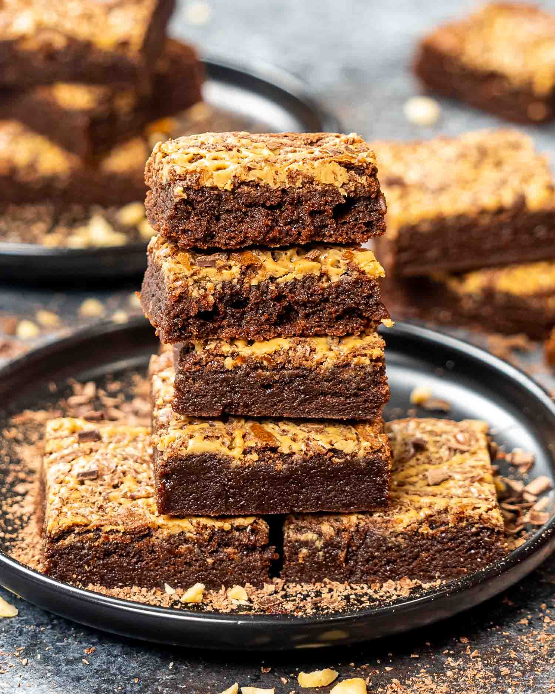
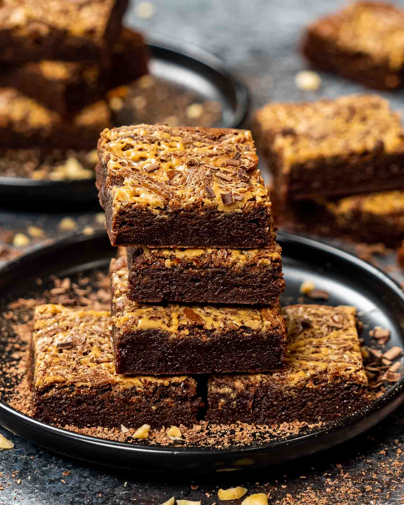
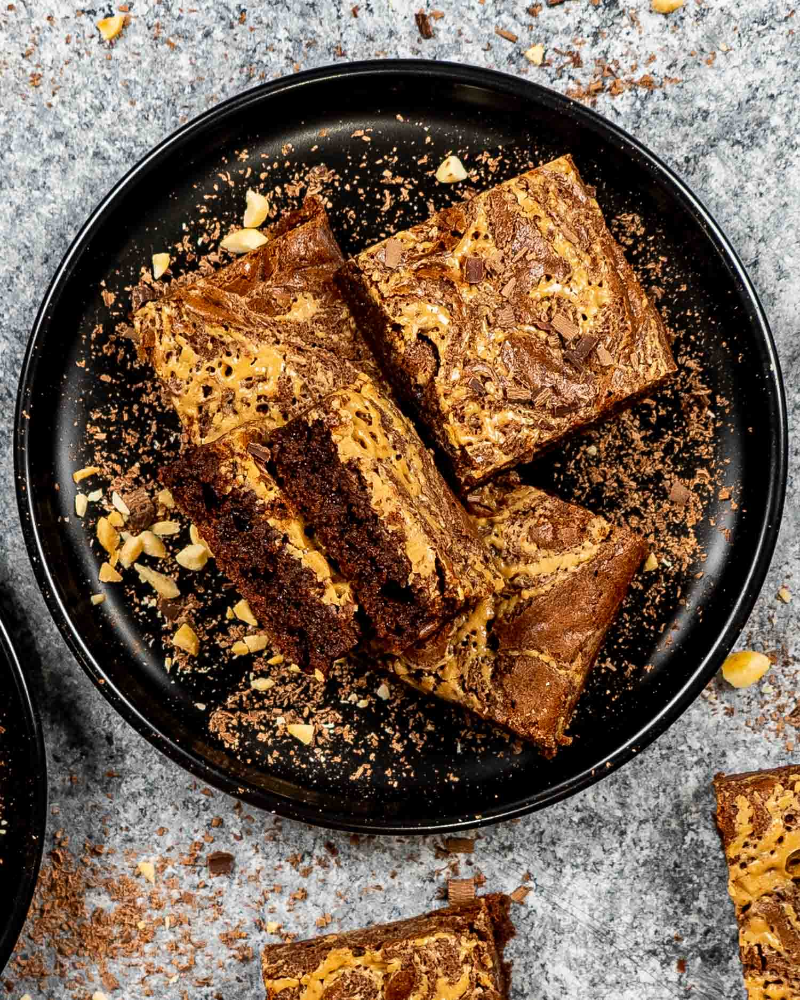
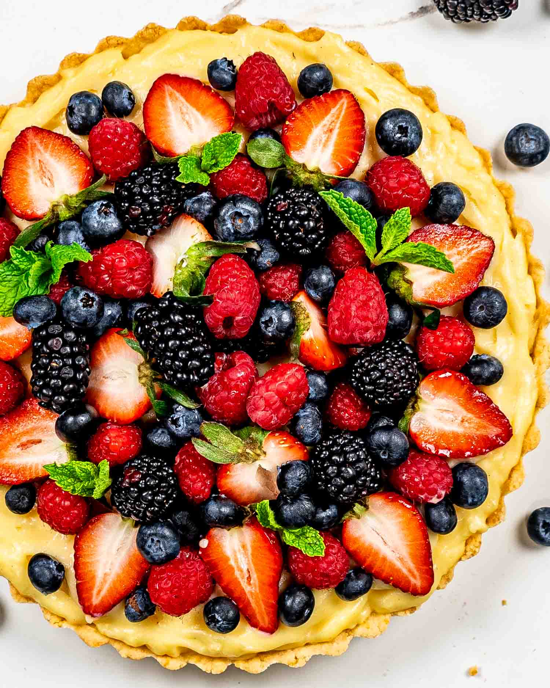

Recipes
Apple Pie Cake
Origin: Unknown Source: Jo Cooks Category: Dessert Pie or cake, cake or pie? End the debate and embrace the best of both with my show-stopping Apple Pie Cake—where flaky pie meets fluffy cake in a delicious dance-off!
Recipe Ingredients
- Apples
- Brown sugar
- Lemon juice
- Boxed yellow cake mix
- Water
- Oil
- Eggs
- Salt
- Flour
- Butter
Recipe Steps
- Preheat And Prep
- Mix The Cake Batter - Grab your yellow cake mix—yeah, the stuff from the box! Dump it into your mixer along with the water, oil, and eggs.
- Apple Time - for the apples. Peel, core, slice them up, and toss them in a bowl with brown sugar, cinnamon, and a squirt of lemon juice.
- Crumble Time - mix some flour, brown sugar, and a pinch of salt.
- Into The Oven
Additional Food images
  Peanut Butter Brownies
Origin: Unknown Source: Jo Cooks Category: Dessert Meet your new favorite sweet treat- Peanut Butter Brownies! As a true dessert lover, I’ve always had a soft spot for gooey chocolatey brownies. But when you add a generous swirl of creamy peanut butter into the mix it takes these delectable treats to a whole new level of indulgence.
Recipe Ingredients
- Dark Chocolate
- Unsalted Butter
- Unsweetened Cocoa Powder
- Granulated sugar
- Vanilla Extract
- Creamy Peanut Butter
- Eggs
- Salt
- Flour
Recipe Steps
- Preheat The Oven And Prep The Pan
- Melt The Chocolate
- Add The Sugar And Eggs
- Mix In The Dry Ingredients
- Make The Peanut Butter Swirl
- Bake The Brownies
Additional Food images
 Berry Tart
Origin: Unknown Source: Jo Cooks Category: Dessert Easy to make and utterly delicious, this Berry Tart is the perfect way to make the most of fresh summer berries! Featuring a buttery shortbread crust, dreamy vanilla custard, and a medley of colorful and juicy fresh berries, this dessert is sure to capture your heart with every delectable bite!
Recipe Ingredients
- Egg Yolk
- Ice Water
- Butterr
- Granulated sugar
- Flour
- Vanilla Custard
- Fresh Berries
Recipe Steps
- Preheat The Oven
- Make The Dough - First, add the all-purpose flour, cold cubes of butter, and granulated sugar to the bowl of a food processor. Then pulse the mixture together until it resembles coarse sand. Next, add the egg yolk and pulse the dough again until it comes together.
- Form The Crust - After you’ve made the dough, transfer it into a 9-inch tart pan with a removable bottom. Then use your fingers to press the dough evenly onto the bottom and up the sides of the pan.
- Blind Bake The Crust - After chilling the crust, place it in the preheated oven and bake it for 12 to 15 minutes or until it turns a light golden brown color. Then remove it from the oven and let it cool completely on a wire rack.
- MFill The Tart - Once cooled, it’s time to fill your perfectly baked tart shell! To begin, make sure your custard is also cool. Now, spread it evenly over the crust and then arrange the fresh mixed berries on top.
- Add A Glaze - This step is totally optional but adds a nice touch of elegance to the tart by giving it a shine. First, warm some apricot jam. Then use a pastry brush to gently brush the warmed jam over the berries, making sure to cover each berry with a thin layer to create a glossy finish.